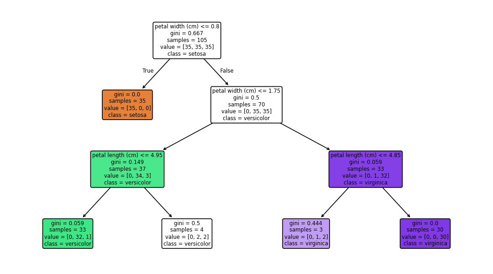

Nana lets Mina identify a hidden fruit using yes-or-no questions. She first asks whether its size score is at most three. Depending on the answer, she may ask about sweetness or stop. Tuktuk draws their choices as branches so it can repeat the same questions for another fruit.
A decision tree organises feature questions into paths. Each path begins at a root and ends at a leaf that supplies the prediction. Different answers can lead to different later questions. A tree does not have to ask every feature about every example.
You will follow a small fitted tree, connect its branches with rectangles on a plot and read a library drawing. The next lesson explains how to choose useful questions by measuring how mixed their groups remain.
A root is the starting question. A branch is the route chosen by one answer. A leaf is a stopping point with a prediction. Think of a branching conversation whose later questions depend on what you already learned.
| Size score | Sweetness score | Known label |
|---|---|---|
| 1 | 1 | Apple |
| 1 | 4 | Apple |
| 2 | 2 | Apple |
| 2 | 5 | Mango |
| 4 | 1 | Mango |
| 4 | 4 | Mango |
| 5 | 2 | Mango |
| 5 | 5 | Mango |
A size-three cut puts four cards on each side. The right group already contains only mangoes. The left group has three apples and one mango, so a sweetness question can separate the exception. The earlier size answer still applies when that child question is asked.
The root asks size ≤ 3. A no answer goes directly to the mango leaf. A yes answer asks sweetness ≤ 4.5. Yes there gives apple; no gives mango. Query (2,5) therefore goes left and then right, reaching mango.
size <= 3?
├── no: Mango
└── yes: sweetness <= 4.5?
├── yes: Apple
└── no: MangoOn the plot, the root question is a vertical line. Its child question is horizontal, but only inside the left rectangle. Drawing the child cut across the whole plot would describe a different set of paths. Each leaf owns the intersection of the answers that led to it.
The lab grows a deterministic two-feature binary tree on at most twenty cards. It tries feature midpoints and requires a positive impurity improvement, using feature order and then threshold order for equal gains. It shows each chosen question, the corresponding plot cut and the leaf rectangles. These are actual fitted decisions, not a separately drawn illustration.
Lowering maximum depth to one leaves the left group mixed. It predicts its apple majority and misses the valid mango at (2,5). A mixed leaf is an approximation, not proof that the minority example was incorrectly labelled. This gives seven training matches rather than eight.
Predict the star's leaf before playing the first preset. Then set depth one and explain the changed answer for (2,5). Move the star to (5,1): why is the sweetness question unnecessary there?
Write the root and child questions on separate cards. Let one classmate act as a query and carry its scores through the branches. Another classmate draws the allowed rectangle after each answer. Compare the final rectangle with the reached leaf.
The root asks x ≤ 3. Its left branch asks y ≤ 4.5, while its right branch is already pure class one. Query (2,5) goes left, then right, reaching class one. Five nodes include two questions and three leaves.
The displayed data have decisive best cuts, so the library tree matches the scratch path, training matches and node count. The educational solver uses feature-order and midpoint-order ties; another tied dataset can legitimately produce a different tree.
The reserved iris flowers are scored after fitting. plot_tree draws the actual learned questions and leaf class counts. Read each test from the root, following its true branch left and false branch right; a leaf stops the path.

The drawing includes class counts and impurity for each node. Those counts refer to training flowers, while the printed score uses reserved flowers. A leaf colour shows its predicted class; it does not make every future flower certain. Read the feature name and threshold before following an arrow.
A child applies only after its parent answer. Keep the earlier conditions while drawing its cut or tracing a query.
Internal questions are nodes too. This tree has two internal questions and three leaves, giving five total nodes.
More questions can fit small training exceptions, including noise. Compare on suitable held-out data before concluding that an extra branch helps future examples.
A numeric test on one feature divides space parallel to an axis. Combining tests along a path intersects their allowed half-spaces. In two features this creates rectangular leaf regions; the union of several leaves can approximate a more complicated class boundary.
The educational solver has explicit stopping and tie rules. A library can choose differently when gains tie, so compare predictions and stated conventions rather than assuming every valid tree must have identical branches. The displayed eight-card example has decisive cuts and matches the library implementation.
Continue with Gini impurity and entropy.